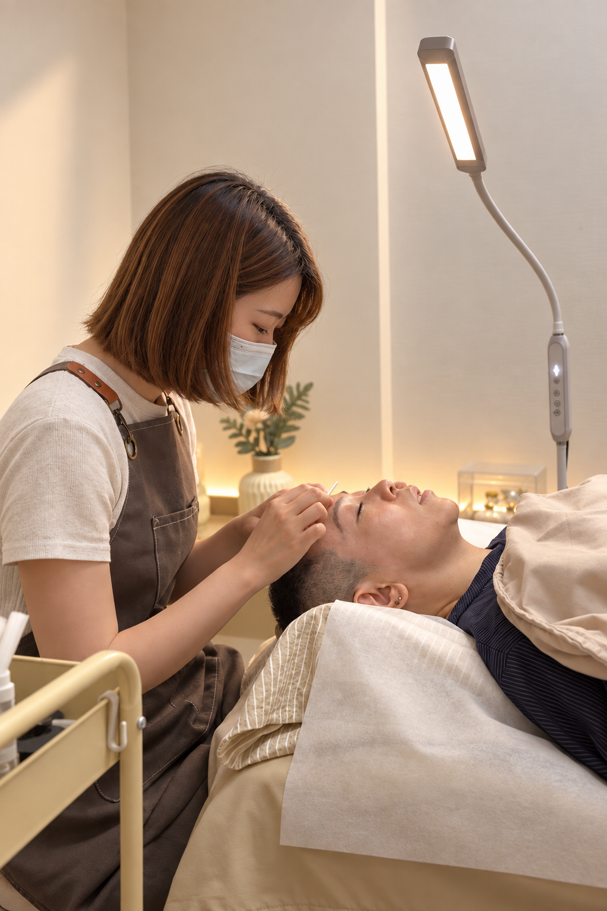

美，不需要成為別人。
在予妳 YUNI，我們相信每個人都有自己的美
從理解妳的氣質與喜好開始，以客製化眉型設計，陪妳找到適合自己的樣子
不追逐相同的標準，只希望妳在每一次照鏡子時，都能更自在地喜歡自己
予妳 YUNI｜懂妳、予妳、像妳。

自然、知性、純粹
三大品牌概念
懂妳
UNDERSTAND
傾聽每位顧客的需求，觀察五官、氣質與喜好，不以流行定義美，而是理解每個人的獨特。
予妳
GIVE
以細心的客製化設計與溫柔陪伴，打造沒有壓力的霧眉體驗，讓每位顧客都能自在地做自己。
像妳
BE YOURSELF
不追求千篇一律的標準美，而是保留每個人的原有特色，讓霧眉成為更喜歡自己的開始。
專業服務項目
為妳量身打造的細緻美學體驗
日系輕柔霧眉
專為每位女孩打造如輕粉刷過般的自然柔霧感，告別每天早起畫眉的繁瑣，素顏也能擁有好氣色。
客製眉型設計
結合黃金三庭比例與個人氣質走向，深入溝通妳喜愛的風格，細心描繪出最適合妳的命定眉型。
霧眉精緻改色 / 補色
針對舊底色或需要微調對稱度的眉毛進行專業校色與自然銜接，讓眉眼重新煥發自信光采。